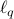

胡耀华 - 论文
投稿论文
Y. Hu, C. Li, K. W. Meng and X. Yang, Linear convergence of inexact descent methods and inexact proximal gradient algorithms for lower-order regularization problems, submitted to Foundations of Computational Mathematics. [link]
Y. Hu, C. K. W. Yu, J. Wang, C. Li and X. Yang, Extended Newton methods for multiobjective optimization: Majorizing function technique and convergence analysis, submitted to SIAM Journal on Optimization.
J. Qin, Y. Hu, J.-C. Yao, Y. Qin, K. H. Chu and J. Wang, Group sparse optimization: An integrative OMICs method to predict master transcription factors for cell fate conversion, submitted to Nucleic Acids Research.
W. Veldsman, F. Cheung, Y. Hu, X. Jiang, P. Wang, J. Qin, J. Wang, Constructing personalized dysregulated transcriptional regulatory networks from patient transcriptome profiles via sparse learning, submitted to Journal of Molecular Biology.
X. Li, Y. Hu*, C. Li, X. Yang and T. Jiang, Sparse estimation via  optimization methods in high-dimensional linear regression, submitted to Journal of Machine Learning Research.
Y. Hu, C. K. W. Yu and X. Yang, Incremental subgradient methods for minimizing the sum of quasi-convex functions, submitted to Journal of Global Optimization. [link]
C. K. W. Yu, Y. Hu and S.-J. Choy, Enhancing portfolio performance via the mean-variance analysis, submitted to Mathematics and Financial Economics.
J. Wang, X. Zhuang, C. K. W. Yu, Y. Hu*, A family of projection gradient methods for solving the multiple-sets split feasibility problem, submitted to Journal of Optimization Theory and Applications.
X. Wang, Y. Hu*, C. Li and S.-M. Guu, Linear convergence of subgradient algorithm for convex feasibility problems with applications, submitted to Journal of Optimization Theory and Applications.
Y. Hu, J. Li and C. K. W. Yu, Convergenece rates of subgradient methods for quasi-convex optimization problems, submitted to European Journal of Operational Research.
K. Zhang, X. Yang and Y. Hu, Power penalty method for solving HJB equations arising from finance, submitted to Automatica.
H. Wang, F. Zhang, Q. Wu, Y. Hu and Y. Shi, Nonconvex and nonsmooth sparse optimization via adaptively iterative reweighted methods, submitted to IEEE Transactions on Signal Processing. [link]
发表文章
J. Bao, C. K. W. Yu, J. Wang*, Y. Hu and J.-C. Yao, Modified inexact Levenberg-Marquardt methods for solving nonlinear least squares problems, Computational Optimization and Applications, accepted for publication, 2019. [link]
C. K. W. Yu, Y. Hu, X. Yang* and S. K. Choy, Abstract convergence theorem for quasi-convex optimization problems with applications, Optimization, accepted for publication, 2018. [link]
W. Shen, Y. Hu*, C. Li and J.-C. Yao, Convergence of the Newton-type methods for the square inverse singular value problems with multiple and zero singular values, Applied Numerical Mathematics, 143: 172-187, 2019. [link]
S. Liu, H. Wang, Y. Hu*, Sparse optimization and regularization methods, Mathematical Modeling and its Applications, 7(4): 1-15, 2018. [link]
L. Zhang, Y. Hu*, C. K. W. Yu and J. Wang, Iterative positive thresholding algorithm for nonnegative sparse optimization, Optimization, 67(9): 1345-1363, 2018. [link]
W. Shen*, Y. Hu, C. Li and J.-C. Yao, Convergence of a Ulm-like method for square inverse singular value problems with multiple and zero singular values, Numerical Algorithms, 7(2): 375-398, 2018. [link]
C. Li, L. Meng*, L. Peng, Y. Hu and J.-C. Yao, Weak sharp minima for convex infinite optimization problems in normed linear spaces, SIAM Journal on Optimization, 28(3): 1999-2021, 2018. [link]
Y. Zhang, Y. Hu*, C. K. W. Yu and J. Wang, Cubic convergence of Newton-Steffensen's method for operators with Lipschitz continuous derivative, Journal of Nonlinear and Convex Analysis, 19(3): 433-460, 2018. [link]
J. Qin*, Y. Hu, K. Ma, X. Jiang, C. Ho, L. Tsang, L. Yi and K. Chu*, CrusTF: A comprehensive resource for evolutionary and functional studies of crustacean transcription factors, BMC Genomics, 18(1): 908, 2017. [link]
L. Zhang, L. Fu, W. Gu*, Y. Ouyang and Y. Hu, A general iterative approach for the system-level joint optimization of pavement maintenance, rehabilitation, and reconstruction planning, Transportation Research Part B: Methodological, 105: 378-400, 2017. [link]
L. Zhang, Y. Hu*, C. Li and J.-C. Yao, A new linear convergence result for iterative soft thresholding algorithm, Optimization, 66(7): 1177-1189, 2017. [link]
J. Wang, Y. Hu*, C. Li and J.-C. Yao, Linear convergence of CQ algorithms and applications in gene regulatory network inference, Inverse Problems, 33(5): 055017, 2017. [link]
Y. Hu, C. Li, K. Meng, J. Qin and X. Yang*, Group sparse optimization via
 regularization, Journal of Machine Learning Research, 18(30): 1-52, 2017. [link]
regularization, Journal of Machine Learning Research, 18(30): 1-52, 2017. [link] Y. Hu, X. Yang* and C. K. W. Yu, Subgradient methods for saddle point problems of quasiconvex optimization, Pure and Applied Functional Analysis, 2(1): 83-97, 2017. [link]
J. Qin, B. Yan, Y. Hu, P. Wang, J. Wang*, Applications of integrative OMICs approaches to gene regulation studies, Quantitative Biology, 4(4): 283-301, 2016. [link]
Y. Hu*, C. K. W. Yu, C. Li and X. Yang, Conditional subgradient methods for constrained quasi-convex optimization problems, Journal of Nonlinear and Convex Analysis, 17(10): 2143-2158, 2016. [link]
Y. Hu*, C. Li and X. Yang, On convergence rates of linearized proximal algorithms for convex composite optimization with applications, SIAM Journal on Optimization, 26(2):1207-1235, 2016. [link]
Y. Hu*, C. K. W. Yu and C. Li, Stochastic subgradient method for quasi-convex optimization problems, Journal of Nonlinear and Convex Analysis, 17(4): 711-724, 2016. [link]
Y. Hu, C.-K. Sim and X. Yang*, A subgradient method based on gradient sampling for solving convex optimization problems, Numerical Functional Analysis and Optimization, 36(12):1559-1584, 2015. [link]
B. Tian, Y. Hu and X. Yang*, A box-constrained differentiable penalty method for nonlinear complementarity problems, Journal of Global Optimization, 62(4):729-747, 2015. [link]
Y. Hu, X. Yang* and C.-K. Sim, Inexact subgradient methods for quasi-convex optimization problems, European Journal of Operational Research, 240(2): 315-327, 2015. [link]
J. Qin#, Y. Hu#, F. Xu, H. K. Yalamanchili and J. Wang*, Inferring gene regulatory networks by integrating ChIP-seq/chip and transcriptome data via LASSO-type regularization methods, Methods, 67: 294-303, 2014. [link]
C. Li, X. P. Zhao and Y. Hu*, Quasi-Slater and Farkas–Minkowski qualifications for semi-infinite programming with applications, SIAM Journal on Optimization, 23(4): 2208-2230, 2013. [link]